Considere o problema no qual a série temporal \(x_t\) recebe apenas uma intervenção, no tempo \(T\). O modelo geral é dado por
\[x_t=m_t+N_t,\] onde o processo \(N_t\) representa a série temporal sem a intervenção e \(m_t\) representa o efeito da intervenção. Ante do tempo \(T\), \(m_t\) é assumida ser nula. A série \(\{x_t,t<T\}\) é referida como dados pré-intervenção e a série \(\{x_t,t\geq T\}\) é referida como pós-intervenção.
A função degrau é definda como \[S_t^{(T)}=\left\{\begin{array}{ll}1,&\hbox{ se }t\geq T\\ 0,&\hbox{ caso contrário}\end{array}\right.\] ou seja, \(S_t(T)=0\) durante a pré-intervenção e \(S_t^(T)=1\) durante a pós-intervenção. A função pulso, definida por \[P^{(T)}_t=S_t^{(T)}-S_{t-1}^{(T)}\] é a variável indicadora do tempo da intervenção. Como \[P_t^{(T)}=(1-B)S_t^{(T)}\] podemos escrever o pulso em função de \(S_t^{(T)}\).
Quando a intervenção possui um resultado imediato e permanente na função média, a mudança pode ser modelada por \[m_t=\omega S_t^{(T)},\] onde \(\omega\) é o parâmetro que modela da mudança permantente na média. Em termos de função pulso, teremos \[m_t=m_{t-1}+\omega P_t^{(T)}.\] A figura abaixo ilustra esse efeito
plot.new()plot.window(xlim=c(0,11), ylim=c(0,1.5))axis(1, at =c(0,5,10),c('','T',''))axis(2, at =c(0,1,1.5), c(0,expression(omega),''))lines(0:4,rep(0,5), type='o', pch=16)lines(5:10,rep(1,6), type='o', pch=16)
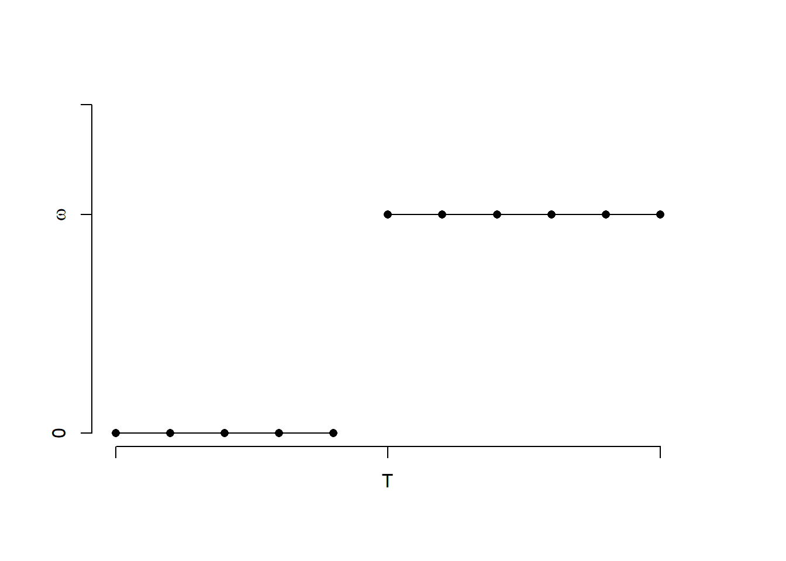
Também é possível que a mudança na função média só ocorra após um atraso de \(d\) unidades de tempo em relação à intervenção. Se \(d\) é conhecido, teremos \[m_t=\omega S_{t-d}^{(T)}.\] A figura abaixo apresenta essa estrutura considerando um atraso de dois dias.
plot.new()plot.window(xlim=c(0,11), ylim=c(0,1.5))axis(1, at =c(0,5,10),c('','T',''))axis(2, at =c(0,1,1.5), c(0,expression(omega),''))lines(0:6,rep(0,7), type='o', pch=16)lines(7:10,rep(1,4), type='o', pch=16)
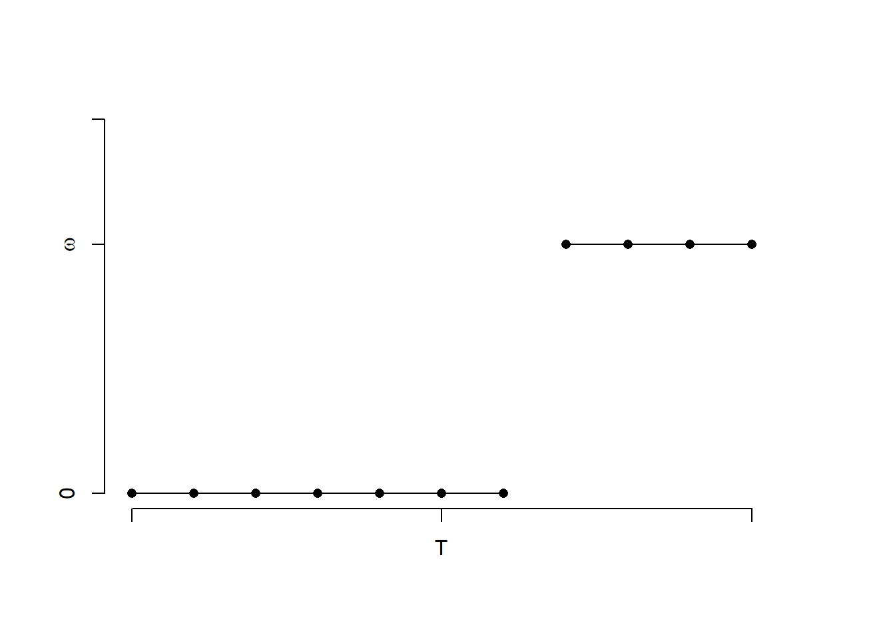
Em outro cenário, é possível que a intervenção possua um efeito imediato que se apaga gradualmente. Podemos reproduzir esse efeito com utilizando a estrutura
\[m_t=\delta m_{t-1}+\omega P_{t}^{(T)},\] com \(\delta \in (0,1)\) e \(m_0=0\). Uma vez que \(m_t=\omega \delta^{T-t}\) para \(t\geq T\), \(m_t\) decrescerá exponencialmente para zero, eliminando o efeito da intervenção. A mesma estrutura anterior pode ser reescrita como
\[m_t=(1-\delta B)^{-1}\omega (1-B)S^{(T)}_t\] A figura abaixo ilustra essa estrutura.
plot.new()plot.window(xlim=c(0,11), ylim=c(0,1.5))axis(1, at =c(0,5,10),c('','T',''))axis(2, at =c(0,1,1.5), c(0,expression(omega),''))lines(0:4,rep(0,5), type='o', pch=16)m =0for(i in1:6) m[i+1] = .5*m[i]+ifelse(i==1,1,0)lines(5:10,m[-1], type='o', pch=16)
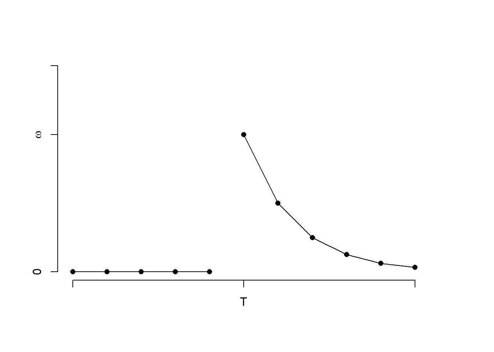
As estruturas acima podem ser combinadas para criar novas. Por exemplo, suponha que no tempo \(T\) a função média se modifia e posteriormente esse efeito diminui, se tornando uma nova constante. Podemos imaginar que a função \(m_t\) deve ser composta de duas partes
\[m_t = m_{1,t}+m_{2,t},\] onde \[m_{1,t}=\omega_1 S_{t}^{(T)}\] representa a nova mudança a ser observa em médio prazo e \[m_{2,t}=\delta m_{2,t-1}+\omega_2 P_{t}^{(T)}\] representa a mudança momentânea, que será eliminada no curto prazo. A figua abaixo ilustra essa situação.
plot.new()plot.window(xlim=c(0,14), ylim=c(0,1.5))axis(1, at =c(0,5,10),c('','T',''))axis(2, at =c(0,1.5,.5), c(0,expression(omega[1]+omega[2]),expression(omega[1])))lines(0:4,rep(0,5), type='o', pch=16)m1 =0for(i in1:10) m1[i+1] = .5*m1[i]+ifelse(i==1,1,0)lines(5:14,.5+m1[-1], type='o', pch=16)abline(h=.5, lty =2)abline(h=1.5, lty =2)
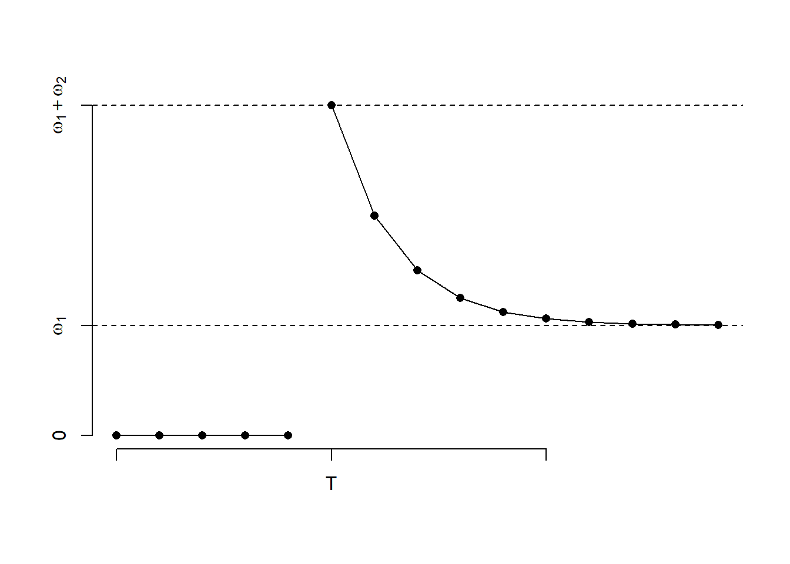
Vamos discutir a estimação dos parâmetros da intervenção considerando um modelo ARIMA (sazonal ou não). Note que \[x_t-m_t=N_t,\] onde \(N_t\) é um modelo ARIMA. Sejam \((\theta,\phi)\) os parâmetros do modelo ARIMA e \(\omega\) os parâmetros da intervenção. Então,
\[L(\theta,\phi,\omega|x_1,\ldots,x_n)=L_{\hbox{ARIMA}}(\theta,\phi|x_1-m_1,\ldots,x_n-m_n)\] e podemos utilizar a mesma função de verossimilhança para implementar a intervenção.
11.1.1 Exemplo: Nível do Nilo
Considere mais uma vez a série anual do fluxo do Rio Nilo, mostrada abaixo. A linha pontilhada vertical, no ano de 1898, mostra uma mudança de nível na série. As linhas pontilhadas horizontais mostram a média amostral da série antes e depois de 1898. Note que houve uma redução no volume de aproximadamente 247 \(\times 10^8 m^3\).
Abaixo, mostramos que a série após 1890 é consistente com um modelo AR(1) com deriva.
nile1890 <-window(Nile, start =1890)acf(nile1890)
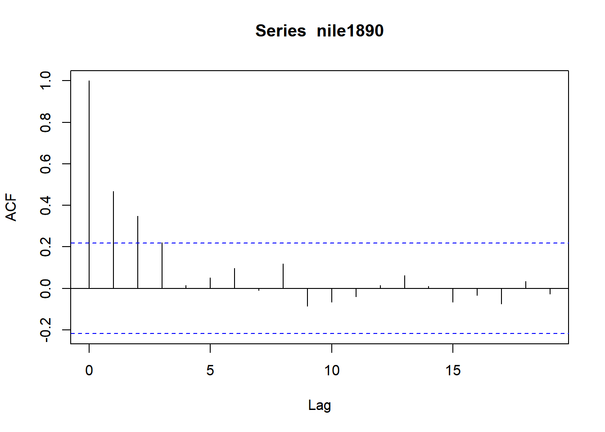
pacf(nile1890)
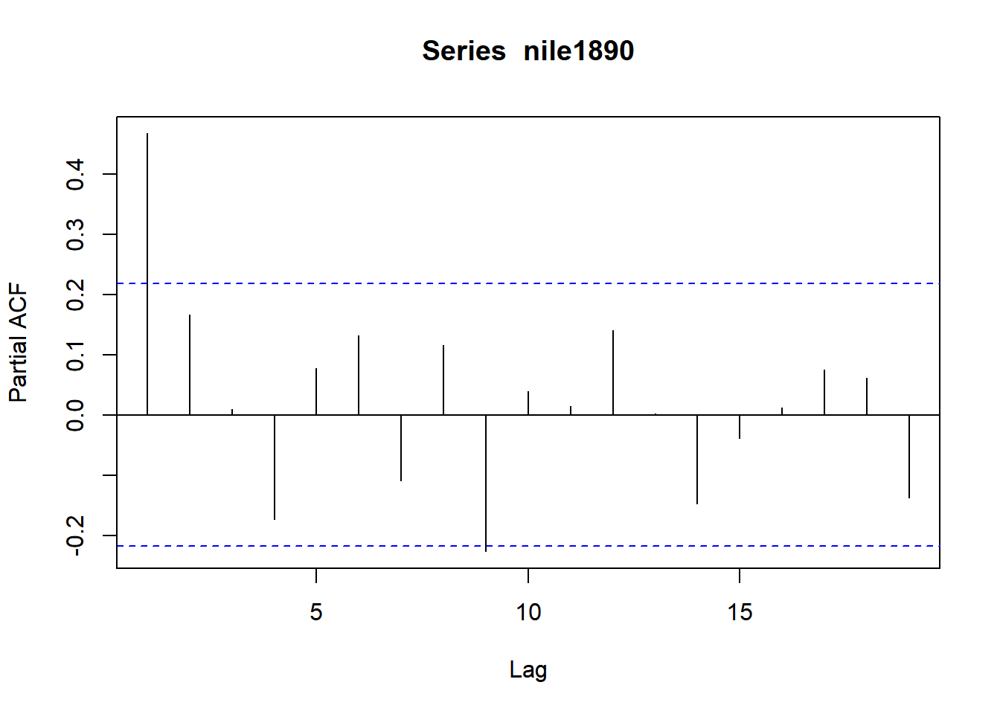
Vamos considerar o modelo de intervenção
\[m_t=\omega S_{t-1}^{(1898)}.\]
La <-function(omega){ St <-array(1,length(Nile)) St[time(Nile)<1898]<-0 mod <-arima(Nile-omega*St, c(1,0,0)) mod$loglik} optimize(La, c(-500,500), maximum =TRUE)
$maximum
[1] -241.857
$objective
[1] -626.84
A estimativa de máxima verossimilhança para \(\omega\) é \(-241,857\). Abaixo, analisamos os resíduos do modelo ajustado
omega_chapeu <--241.857 St <-array(1,length(Nile)) St[time(Nile)<1898]<-0 mod <-arima(Nile-omega_chapeu*St, c(1,0,0))ts.plot(mod$residuals)
Shapiro-Wilk normality test
data: mod$residuals
W = 0.98747, p-value = 0.4697
11.1.2 Exemplo: óbitos maternos durante a pandemia
Durante a pandemia de COVID-19, Manaus passou por duas grandes ondas de mortes. A primeira, ocorreu no início da pandemia, em abril de 2020. A segunda, e mais impactante, ocorreu em janeiro de 2021, pela falta de tubos de oxigênio.
A série abaixo representa o número de óbitos maternos e de mulheres em idade fértil, 10 a 49 anos - MIF - na cidade de Manaus, entre 2005 e 2022.
require(gsheet)
Carregando pacotes exigidos: gsheet
Warning: package 'gsheet' was built under R version 4.3.2
url <-'https://docs.google.com/spreadsheets/d/1Cd9sxyI7Hm058fCXP7Sw4WzKyuRrCbal7bWz16T8smM/edit?usp=sharing'x <-gsheet2tbl(url)obt <-ts(x$N, frequency =12, start=c(2005,1))ts.plot(obt, ylab ='Óbitos de MIF')
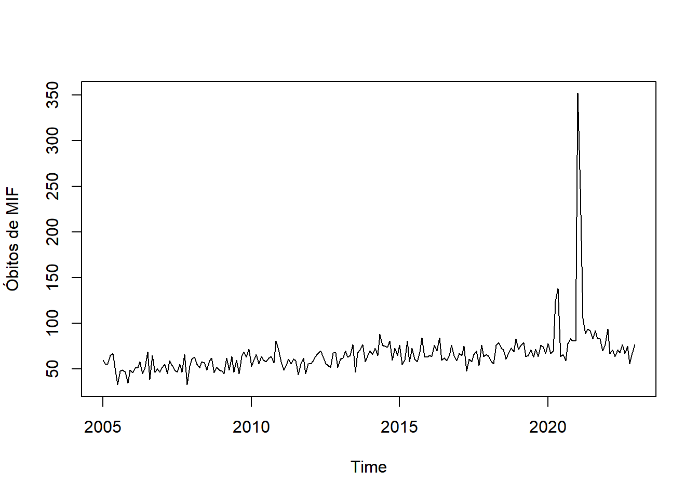
A pandemia é o nosso evento de intervenção e o período pré-pandêmico, logo a série até março de 2020 constiuirá nossos dados pré-intervenção, cuja série é mostrada abaixo
obt2020_3 <-window(obt, end =c(2020,3))ts.plot(obt2020_3, ylab='No. óbitos', title ='Óbitos de MIF, pré-pandemia')
Warning in xy.coords(x = matrix(rep.int(tx, k), ncol = k), y = x, log = log, :
NAs introduzidos por coerção
Warning in xy.coords(x, y): NAs introduzidos por coerção
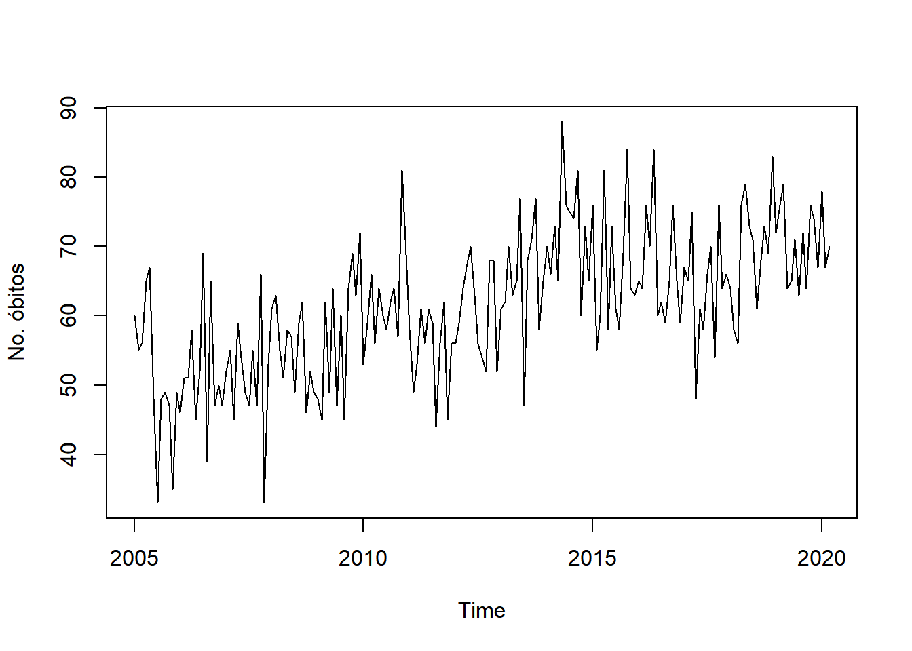
Podemos notar uma leve tendência na série. O correlograma e a autocorrelação parcial amostral da primeira diferença da série mostram uma estrutura compatível com um modelo ARIMA( 4,1,1).
tend <-loess( obt2020_3 ~time(obt2020_3))tend <-ts(tend$fitted, start =start(obt2020_3), frequency =frequency(obt2020_3))ts.plot(obt2020_3)lines(tend)
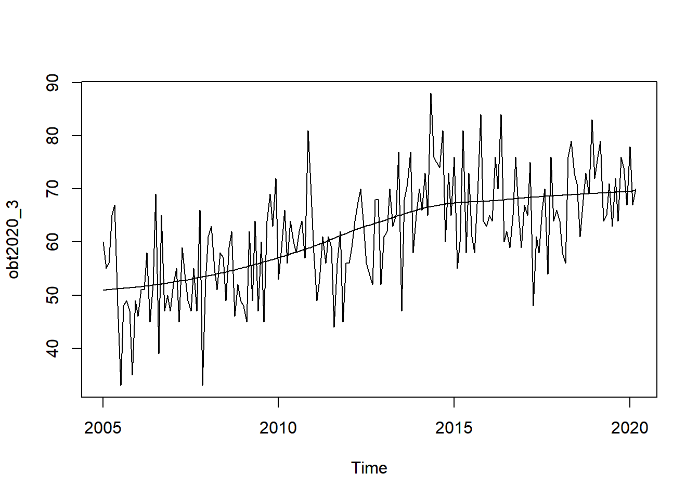
Abaixo, estudamos o comportamento da série sem a tendência, em busca de sazonalidade. Não há evidências de sazonalidade nessa etapa da análise.
require(TSA)
Carregando pacotes exigidos: TSA
Warning: package 'TSA' was built under R version 4.3.2
Attaching package: 'TSA'
The following objects are masked from 'package:stats':
acf, arima
The following object is masked from 'package:utils':
tar
semTend <- obt2020_3 - tendts.plot(semTend)
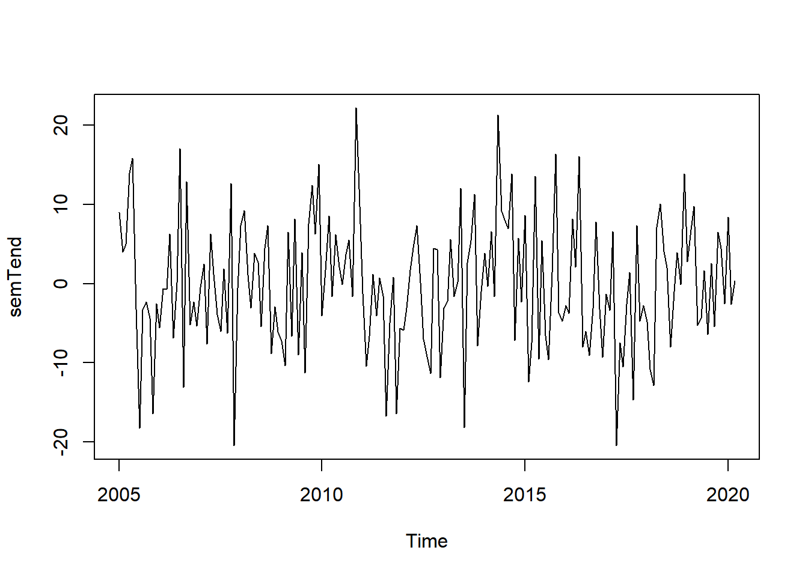
periodogram(semTend)
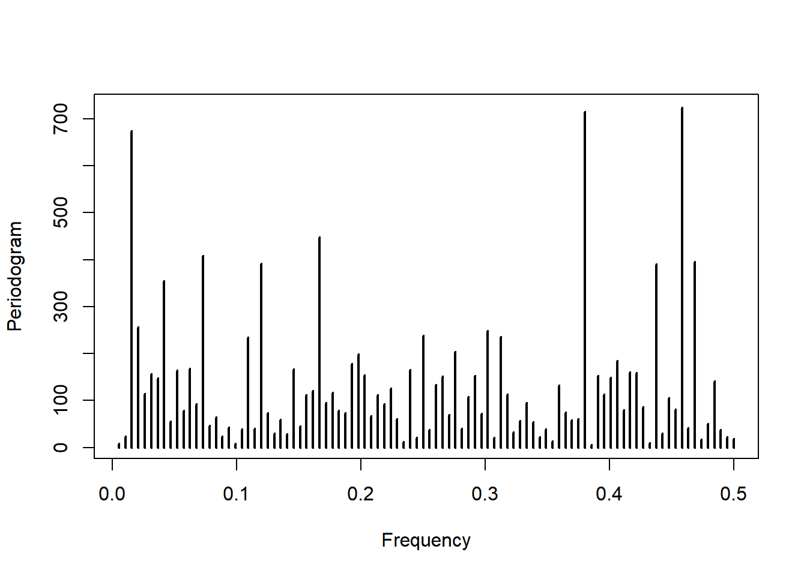
monthplot(semTend)
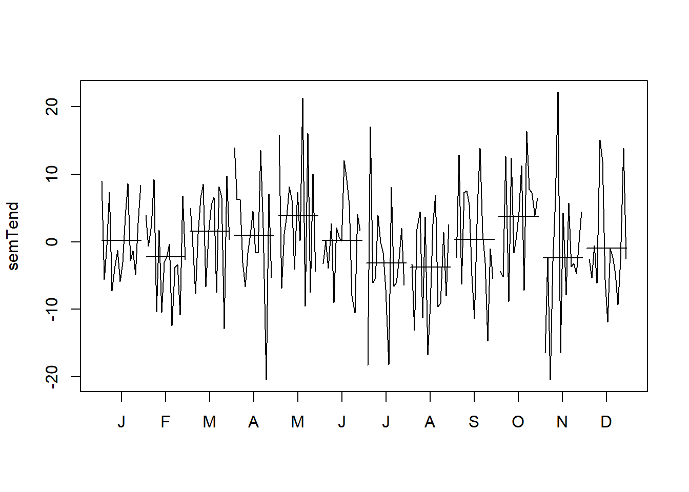
Vamos analisar a primeira diferença da série. Há sinais de que a parte estacionária é composta por uma média móvel e ordem 1 e uma sazonal e uma autoregressiva.
d1 <-diff(obt2020_3,1)acf(d1)
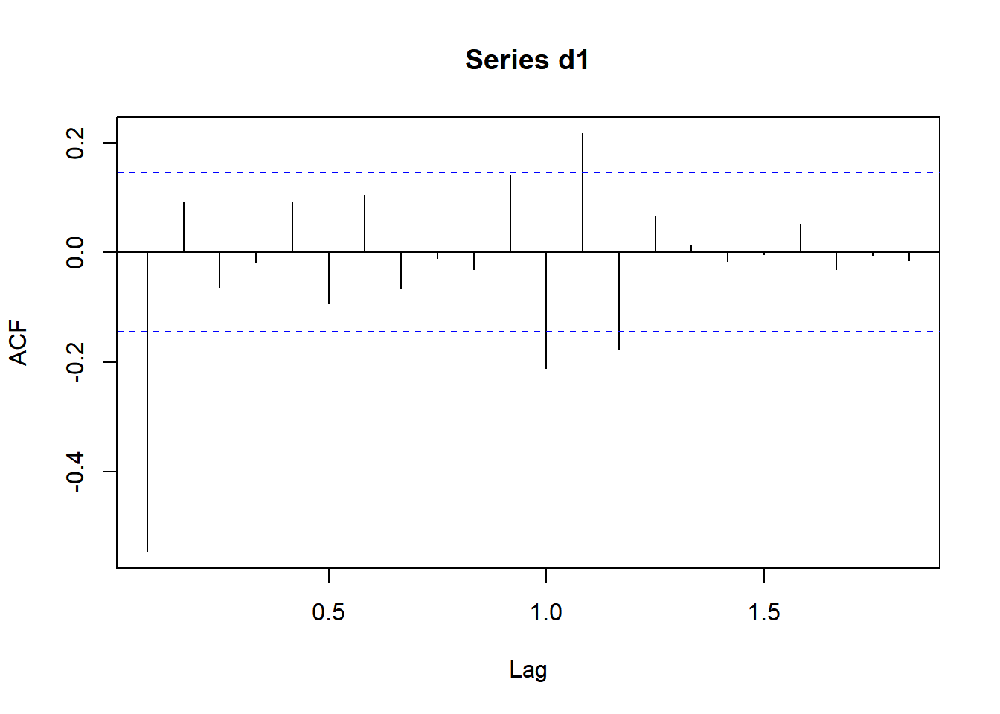
pacf(d1)
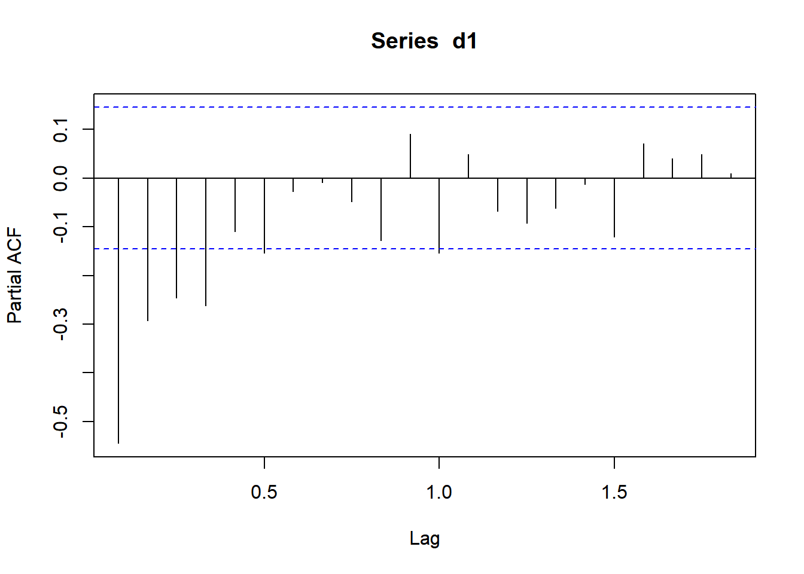
Vamos tentar ajustar o modelo ARIMA(1,1,1)(0,0,1).
require(forecast)
Carregando pacotes exigidos: forecast
Warning: package 'forecast' was built under R version 4.3.1
Registered S3 method overwritten by 'quantmod':
method from
as.zoo.data.frame zoo
Registered S3 methods overwritten by 'forecast':
method from
fitted.Arima TSA
plot.Arima TSA
mod <-Arima(obt2020_3,c(1,1,1),c(0,0,1))res <- mod$residualsts.plot(res)
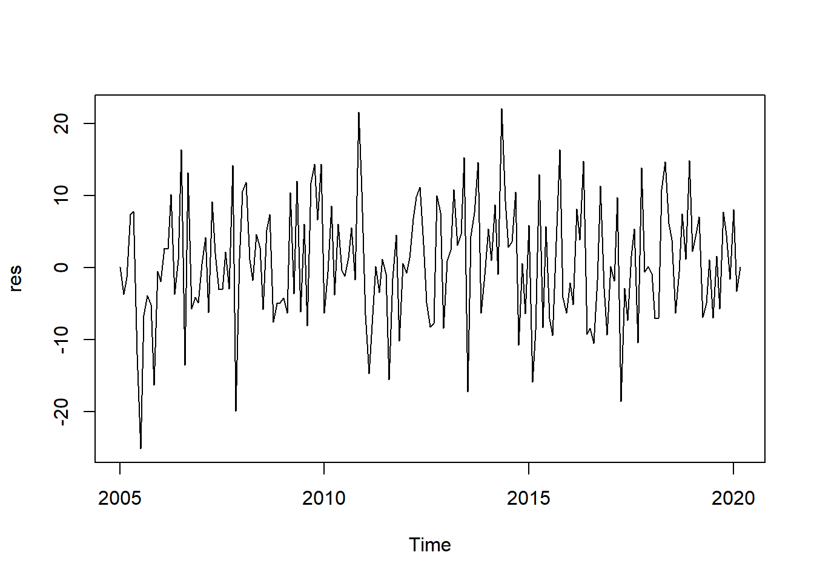
acf(res)
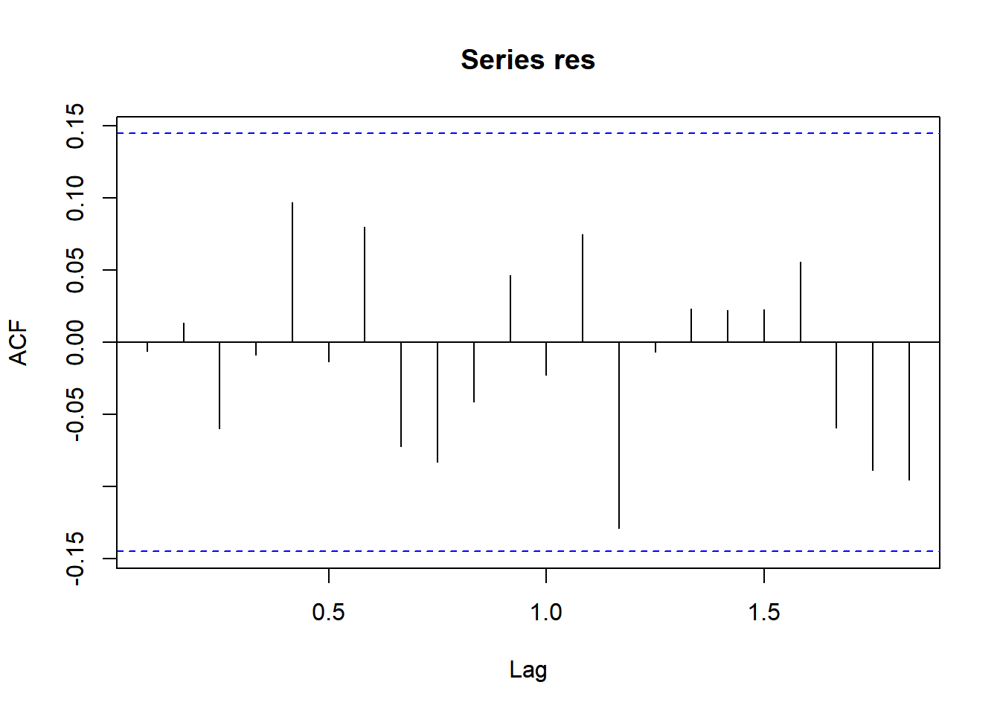
pacf(res)
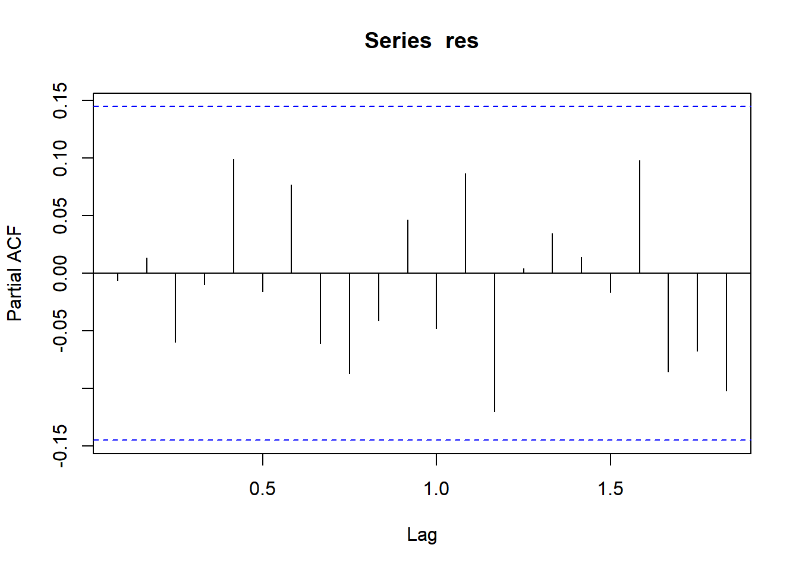
Box.test(res)
Box-Pierce test
data: res
X-squared = 0.0070781, df = 1, p-value = 0.933
shapiro.test(res)
Shapiro-Wilk normality test
data: res
W = 0.99353, p-value = 0.6022
Considere agora a previsão para o resto do ano de 2020, dada abaixo, com o que foi observado.
Note que o efeito da pandemia surge em abril, aumenta em março e desaparece logo em seguida. Então, até dezembro de 2020, vamos assumir que
\[x_t-x_{t-1}=\phi(x_{t-1}-x_{t-2}) + \theta\varepsilon_{t-1}+\Theta \varepsilon_{t-12}+\varepsilon_t+m_t,\] onde \[m_t=m_{1,t}+m_{2,t}\] com \[m_{1,t}=\delta_1 m_{1,t-1}+\omega P_t^{(2023/4)},\] e \[m_{2,t}=\delta_2 m_{2,t-1}+\omega_2P_{t}^{(2023/5)}.\]
Abaixo, constrúimos a função de verossimilhança.
# selecionando a série até o fim de 2020obt2020 <-window( obt, end =c(2020,12))# função pulso Pt1 <-ifelse( time(obt2020) ==2020.250, 1, 0)Pt2 <-ifelse( time(obt2020) ==time(obt2020)[185], 1, 0)# função para encontrar o EMVfun <-function(par){# parâmetros da intervençãodelta1 <-exp(par[1]) / ( 1+exp(par[1]) )delta2 <-exp(par[2]) / ( 1+exp(par[2]) )omega1 <-exp(par[3])omega2 <-exp(par[4])# mtmt = mt1 = mt2 =0for(i in1:length(obt2020)){ mt1[i+1] = delta1*mt1[i]+omega1*Pt1[i] mt2[i+1] = delta2*mt2[i]+omega2*Pt2[i]} mt = mt1 + mt2mt <- mt[-1] # removendo m0mt <-ts(mt, start=c(2005,1), frequency =12)# estimação do ARIMAmod <-Arima(obt2020-mt, c(1,1,1),c(0,0,1))# retorne a log verossimilhança do modelo-mod$loglik}
Vamos obter as estimativas de máxima verossimilhança.
Logo em abril, os casos aumentaram em \(\hat{\omega}_1=52\). Observe que \(\delta_1<0,003\), logo o efeito para o mês seguinte dos casos de maio é praticamente nulo. Portanto, \(\hat{\omega}_2=66\) representa, basicamente, o efeito de maio. Como \(\delta_2\) é praticamente nulo, eses efeito somem em junho.
Shapiro-Wilk normality test
data: resFim
W = 0.9931, p-value = 0.5056
Por último, podemos fazer um gráfico de \(m_t\) para verificar o efeito do início da pandemia na série
ts.plot(window(mt, start =c(2020,1)), type ='h')
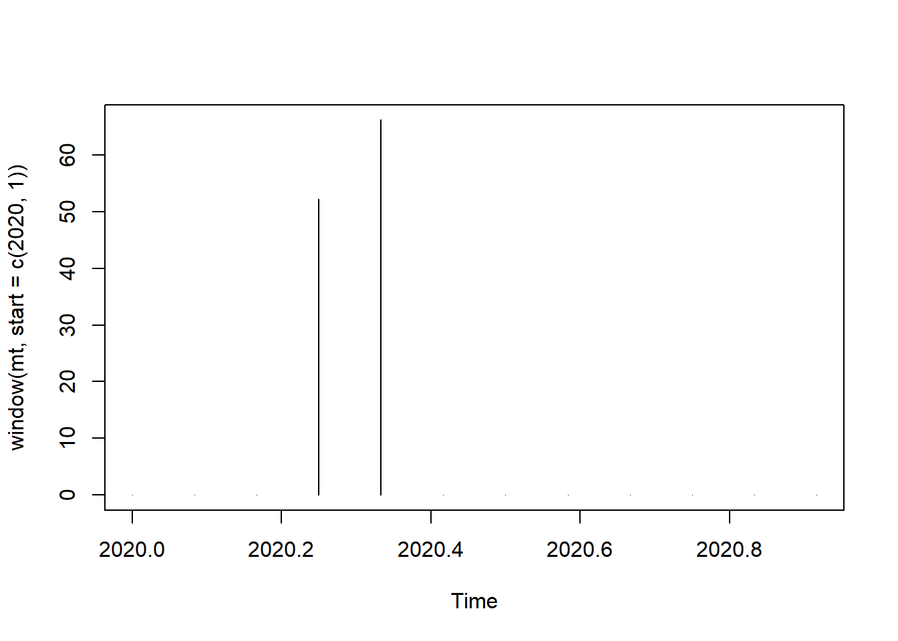
11.2 Outliers
Outliers são observações atípicas. Segundo sua natureza, eles podem ser classificados como
Outliers aditivos (AO): são resultantes de erros de medição/registro
Outliers na inovação (IO): são mudanças abrúptas de curta duração no processo subjacente.
Seja \(x_t\) uma série temporal. Então, se um outlier aditivo ocorre no tempo \(T\), a série temporal pode ser descrita como \(x_t'\), onde
\[x_t'=\left\{\begin{array}{ll}x_t,&\;\;t\neq T\\ x_t+\omega_AP_t^{(T)},&\;\;t=T.\end{array}\right.\] Note que um outlier aditivo pode ser tratado como uma intervenção, onde \(m_t=\omega_A P_t^{(T)}\).
Seja \(\varepsilon_t\) erro associado à série \(x_t\). Um outlier na inovação ocorre quando o erro (também conhecido como inovação) no tempo \(T\) sofre uma perturbação.
\[\varepsilon_t'=\left\{\begin{array}{ll}\varepsilon_t,&\;\;t\neq T\\ \varepsilon_t+\omega_I P_t^{(T)},&\;\;t=T.\end{array}\right.\] Considere o processo estacionário MA\((\infty)\)\[x_t=\varepsilon_t+\sum_{j=1}^\infty \theta_j\varepsilon_{t-j}\] Então, o processo com outlier na inovação no tempo \(T\) é escrito como \[x_t'=\varepsilon_t'+\sum_{j=1}^\infty \theta_j\varepsilon_{t-j}'=\varepsilon_t+\sum_{j=1}^\infty \theta_j\varepsilon_{t-j}+\theta_{t-T}\omega_I=x_t+\theta_{t-T}\omega_I,\] onde \(\theta_0=1\) e \(\theta_j=0\) se \(j<0\). Portanto, um outlier na inovação perturba todas as observações no tempo \(t\geq T\), embora esse efeito diminua na medida que \(t\) se afasta de \(T\).
Para detectar um IO, considere que um modelo foi ajustado, gerando a série de resíduos \[\hat{\varepsilon}_t'=x_t'-E(x_t'|\mathcal{D}_{t-1}),\] onde \(\hat{\varepsilon}_t\approx N(0,\sigma^2)\). Então \[\lambda_{1,t}=\frac{\hat{\varepsilon}_t'}{\sigma}\] se comporta como uma distribuição normal padrão quando não há outliers. Na presença de outliers, teremos
\[\lambda_{1,t}=\frac{\hat{\varepsilon}_t'}{\sigma}=\left\{\begin{array}{ll}\frac{\hat{\varepsilon}_t}{\sigma},&\;\; t\neq T\\ \frac{\hat{\varepsilon}_t+\omega_I}{\sigma},&\;\; t= T\end{array}\right.\] Se \(T\) é conhecido, declaramos \(x_T\) como outlier se \(|\lambda_{1,T}|>1,96\) e \(\hat{\omega}_I=\hat{\varepsilon}'_T\). Se \(T\) é desconhecido, calcula-se \[\lambda_1=\max_{1\leq t \leq n}|\lambda_{1,t}|,\] e define-se \(T\) como sendo o valor \(t\) tal que \(\lambda_{1,t}=\lambda_1\). Como todos os pontos estão sendo avaliados, precisamos realizar algum teste múltiplo. O mais simples é a correção de Bonferroni, que nos leva a declarar que \(x_T\) é um outlier se \(\lambda_1\) é maior que o quantil \(1-\alpha/2n\) da normal padrão. Na prática, \(\sigma\) deve ser estimado de modo robusto, uma vez que a variância tradicional é sensível à outliers. Uma alternativa é estimar \(\sigma\) por \[\hat{\sigma}=\sqrt{\frac{2}{\pi}}\sum_{t=1}^n\frac{|\hat{\varepsilon_t}|}{n}.\]
Para o caso AO, considere que \(x_t'\) é um processo AR(\(\infty\)). Então \[\hat{\varepsilon}_t'=x_t'-\sum_{j=1}^\infty \phi_j x_{t-j}',\] onde \(\phi_j=0\) para \(j<t\). Note que, para \(t<T\), \[\hat{\varepsilon}_t'=x_t'-\sum_{j=1}^\infty \phi_j x_{t-j}'=x_t-\sum_{j=1}^\infty \phi_j x_{t-j},\] Para \(t=T\), teremos \[\hat{\varepsilon}_T'=x_T+\omega_A-\sum_{j=1}^\infty \phi_j x_{T-j}=\omega_A+\hat{\varepsilon}_T.\] Para \(t=T+1\), teremos \[\hat{\varepsilon}_{T+1}'=x_{T+1}-\phi_1\omega_A-\sum_{j=2}^\infty \phi_j x_{T+1-j}=-\phi_1\omega_A+\hat{\varepsilon}_{T+1},\] e, de modo geral, para \(k>T\)\[\hat{\varepsilon}_{k}'=-\phi_{T-k}\omega_A+\hat{\varepsilon}_k.\] Definindo a soma de quadrados \[\sum_{j=T}^n'\hat{\varepsilon}_j^2=\sum_{j=T}^{n}(\hat{\varepsilon}_{j}+\omega_A\pi_{T-j})^2\] onde \(\pi_0=1\) e \(\pi_j=\phi_j\) se \(j>0\), podemos estimar \(\omega\) por \[\hat{\omega}_{T,A}=-\frac{\sum_{j=T}^n\pi_{T-j}\hat{\varepsilon}_{j}}{\sum_{j=T}^n\pi_{T-j}^2}\]
Como \(\hat{\varepsilon}_t\approx N(0,\sigma^2)\), teremos que \[\lambda_{2,T}=\frac{\hat{\omega}_{T,A}}{\sigma\sqrt{\sum_{j=T}^n \pi_{T-j}^2}}\] deve se comportar como uma distribuição normal padrão na ausência de outliers. Novamente, se \(T\) for desconhecido, podemos escolher \(T\) como o valor \(t\) que gera o valor \[\lambda_2=\max_{1\leq t \leq n}|\lambda_{2,t}|\] e podemos testar sua significância comparando seu valor com o quantil 1-\(\alpha/2n\) da distribuição normal padrão.
Na prática, é provável que a natureza do outlier seja desconhecida. Nesses casos, tanto o teste para o AO quanto para o IO devem detectar os mesmos outliers. Uma regra que tende a funcionar é classificar o outlier como IO se \(|\lambda_{1,T}|>|\lambda_{2,T}\) ou como AO em caso contrário. Após identificar o outlier e estimar \(\omega\), o mesmo deve ser incorporado na função de verossimilhança e as estimativas devem ser realziadas novamente.
11.2.1 Mortes por doencas pulmonares no Reino Unidos
Voltemos à série ldeaths. Sabemos que essa série possui sazonalidade de período 12 e uma leve tendência de decrescimento. Após fazer uma diferença para remover a tendência de uma diferença sazonal para a sazonalidade, encontramos evidências para ajustar o modelo ARIMA(2,1,2)(0,1,1)
As observações no tempo \(26\) e 38 foram consideradas outliers nas inovações. Já a observação no tempo 72 recebeu as duas classificações e vamos modelar como um AO apenas por fins didáticos.
Ao considerar que o outlier no tempo 72 é aditivo, estamos modificando apenas o nível da série, assim como fizemos para a análise de intervenção. Aqui vamos utilizar a função arimax, do pacote TSA para o mesmo fim. Tal função possui o argumento xreg que permite o uso de variáveis regressoras (no caso, utilizaremos a função pulso como indicadora). Além disso, essa função possui o argumento io que nos permite colocar os índices os outliers nas inovações.